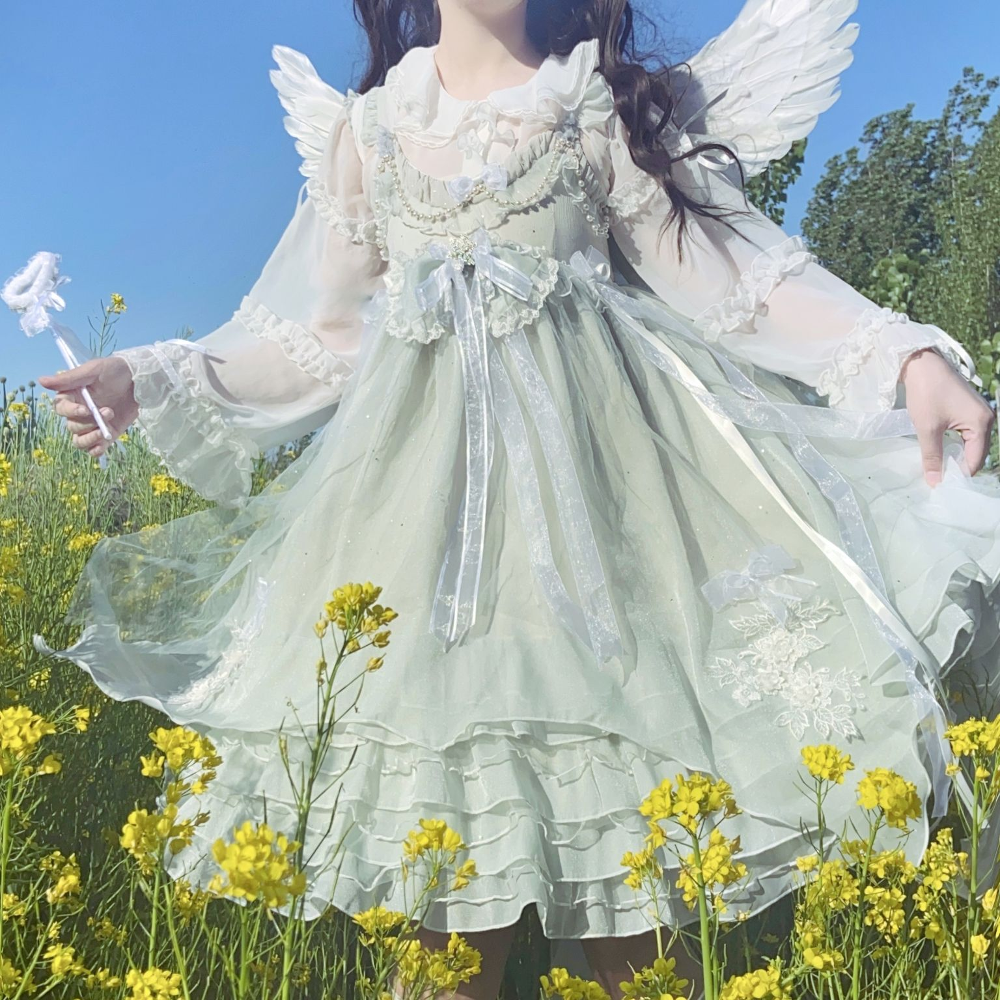
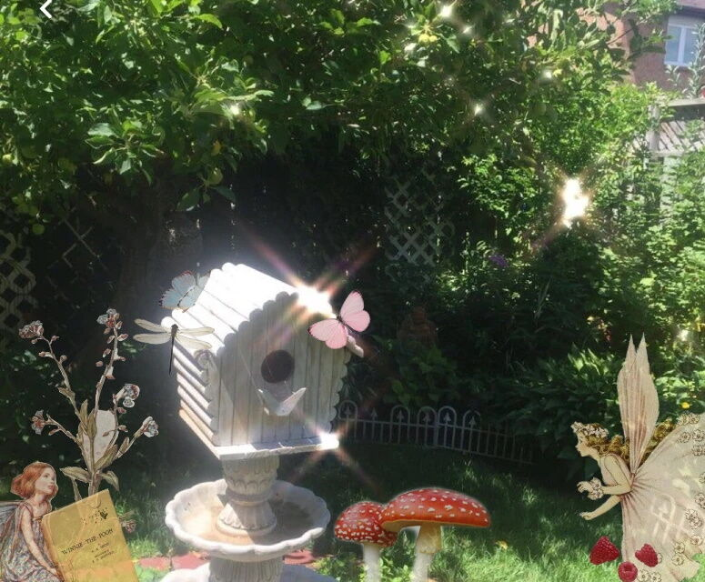

 | Ce este fairycore?
Fairycore, cunoscut și sub numele de fairywave sau faecore, este o estetică care înconjoară tema naturii, culorile pastelate, fluturii, magia, florile, animalele moi precum iepurașii și tema primăverii. Termenul a fost inventat de un utilizator necunoscut din Tumblr. |
Elementele:
Mlaștini; Păduri; Copaci; Câmpuri, în special câmpuri de flori; Iarbă înaltă și groasă; Ciuperci; Inele de zână; Flori, în special flori înalte; Fluturi; Picnicuri; Coșuri; Borcane cu gem; Ceai.
|
Look-ul fairycore presupune: panglici, dantele și țesături transparente, rochii, machiaj sclipitor, strălucitor, încălțăminte deschisă sau, uneori, ffără încălțăminte, păr despletit sau în coafuri libere, dezordonate, unghiile vopsite în pastel sau ne vopsite, bijuterii precum coliere lungi din aur și inele. | |
|  |